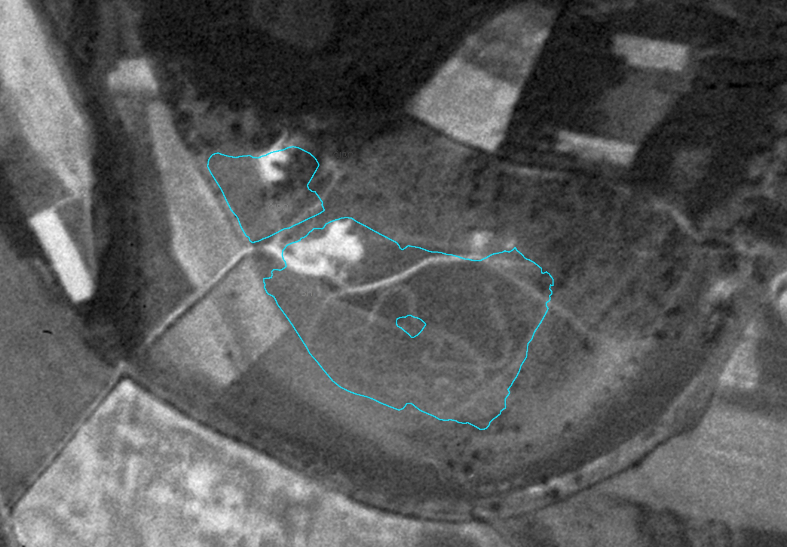
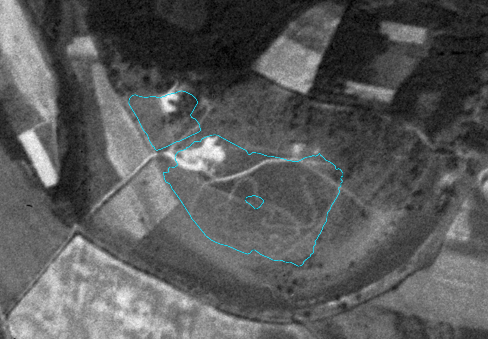
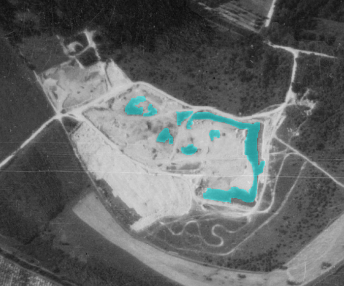
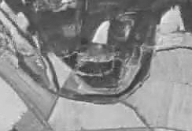

Vznik Èunovskıch jazier
AKO A KEDY VZNIKLI JAZERÁ?
ai štrk v oblasti dnešnıch jazier sa zaèal v šesdesiatych rokoch 20-teho storoèia na miestach, kde štrkopiesky dosahovali najhrubšiu vrstvu.
Èiernobiela letecká snímka z decembra roku 1961 zachytáva tento zaèiatok.
Farebne vyznaèené sú miesta kde sa zaèala aba a obrys Èunovskıch jazier dnes
 

V 60-tych rokoch aba štrku pokraèovala ale jazerá tu ešte stále nevznikli. V rokoch 1967 a 1969 územie vyzeralo takto:
Farebne sú vyznaèené priesaky podzemnej vody
 |
 |
 |
A v 70-tıch rokoch tu postupne zaèali vznika vodné plochy. V októbri 1972 a v auguste 1973 sa u zaèali èrta jazerá:


Malé jazero, juná a severná èas ve¾kého jazera boli postupne vybágrovné a zaplavené. Iba sted jazera tam kde je dnes ostrov nebol ešte zaplavenı a zo zaèiatku jazera tu viedlo úzke prepojenie, ktoré sa postupne zmenšovalo (na snímke z decembra 1973).

Jazero sa ïalej bágrovalo a v marci 1978 u bolo toto prepojenie takmer odstránené,èrtal sa u aj vzniknutı ostrov.

A v auguste 1980 má jazero vpodstate u dnešnı tvar. Polostrov úplne zanikol a je vidno iba ostrov v strede ve¾kého jazera. Vıchodná èas jazera ostala stále rozbágrovaná.

V nasledujúcich rokoch sa jazero ïalej upravovalo a neskôr po ukonèení aby štrku, sa na jeho brehy vracia aj príroda.
Postupnım bágrovaním jazier vznikli na jazere rôzne plytèiny a priehlbiny, ktoré pri poh¾ade z vıšky vytvárajú nádherné rebrovanie jazier.
Je to vidno hlavne na ve¾kom jazere. Na satelitnej snímke z roku 2014 sa to dá pekne pozorova. Všimnite si aj pozostatok prepojenia o ktorom
som písal vyššie.
Porovnanie snímkov a staršej mapy si môete vyskúša v interaktívnom prehliadaèi.